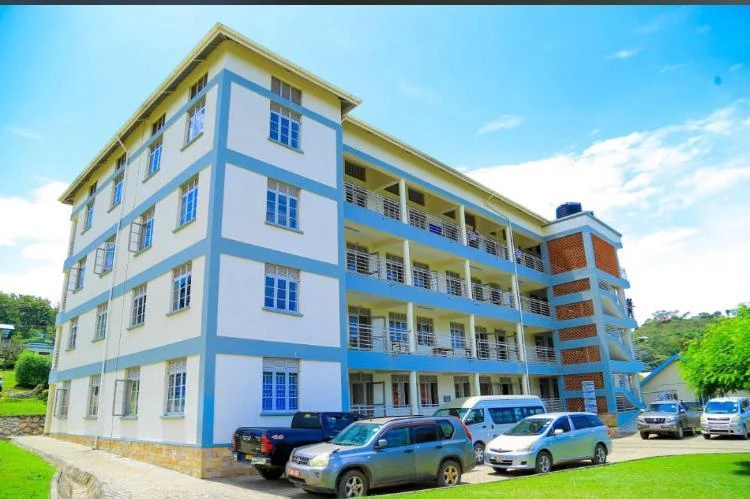
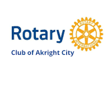

Financial sponsorship
Support the shared campaign or an agreed education priority.
Discuss this route ↗Invest in education infrastructure that can serve communities long after the final kilometre.
Request the campaign pack ↗

Rotary Club of Akright CityLead Rotary partnerChoose a route that fits your organisation. The campaign team will help define the purpose, evidence and reporting before a commitment is finalised.
Support the shared campaign or an agreed education priority.
Discuss this route ↗Discuss building materials, capital support and technical construction inputs.
Discuss this route ↗Bring library resources, ICT equipment and other approved learning materials.
Discuss this route ↗Contribute technical knowledge, project support or implementation capacity.
Discuss this route ↗Develop an initiative aligned with the education mission and institutional priorities.
Discuss this route ↗Explore documented research, entrepreneurship, training or innovation partnerships.
Discuss this route ↗Increase residential capacity for students, including those travelling from rural and farming communities.
Discuss supportExpand teaching facilities, library resources and digital learning infrastructure.
Discuss supportSupport faculty offices, staff accommodation and essential facilities for a growing university.
Discuss supportStrengthen the neighbouring school’s learning environment for children and families in the community.
Discuss supportSupport the five-year planning vision for growth from approximately 802 students towards 4,000–5,000.
Discuss supportScope, budgets, designation and procurement are agreed with the campaign and institutional partners.
Recognition can include agreed campaign visibility, event participation, media acknowledgements or recognition associated with a supported facility or initiative.
Agree the purpose, deliverables, responsibilities and reporting.
Campaign and partner approval comes before a public sponsor acknowledgement.
Naming, procurement and commercial arrangements require separate agreements and applicable approvals.
Request the campaign proposal and verification documents, or tell us the resource and priority you would like to discuss.
Sponsor acknowledgements follow confirmation. The supplied Agri Evolve proposal is an invitation; it does not establish a confirmed sponsorship. Additional partners are acknowledged only after their participation and public recognition are approved.
A step. A club. A partnership. An education future.